ウミウシAutoChess
ウミウシの駒を集めて配置し、海底神殿に現れる敵を倒して全5ステージの突破を目指す、一人用オートチェスです。
目的: 5ステージ目を突破して GAME CLEAR を見ること。
核となる遊び: ガチャで駒を買い、配置を変え、同じ駒を揃えてレベルアップさせ、属性相性を見ながら部隊を組み替えます。
プレイ時間の目安: 1プレイ10分程度。
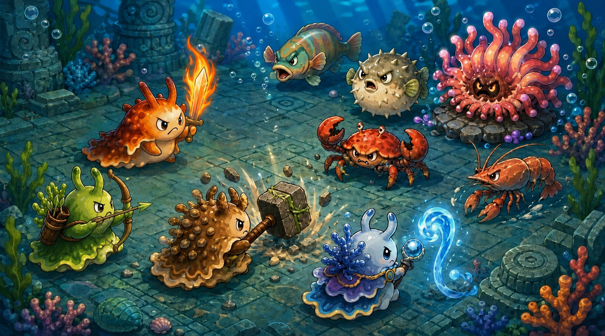
基本の流れ
1. 駒を買う
2. 盤面に配置
3. 戦闘開始
4. 報酬獲得
5. 編成を更新
最初に覚えること
- 「駒を買う」欄から駒を購入します。
- 駒をクリックして選択し、盤面のマスをクリックすると配置できます。
- 配置が終わったら「戦闘開始」ボタンを押します。戦闘は自動で進みます。
- 勝っても負けてもゴールドを得られるので、負けた後もガチャや売却で立て直せます。
強くなる方法
ガチャ
候補を更新して、必要な駒を買います。無料回数がなくなると有料ガチャになります。
売却
不要な駒は売ってゴールドに戻せます。部隊欄の売値ボタン、または控え欄横の売却ボタンから売却できます。
レベルアップ
同じ駒を盤面に3体並べると進化します。レベル3の駒は大きな戦力になります。
配置
盾役を前に、遠距離型を後ろに置くなど、敵の位置と射程を見て調整します。
属性相性
有利属性で攻撃するとダメージが増え、不利属性だとダメージが下がります。
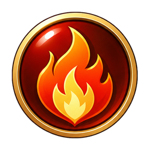
炎森に有利森土に有利
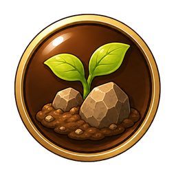
土水に有利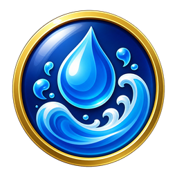
水炎に有利味方の駒
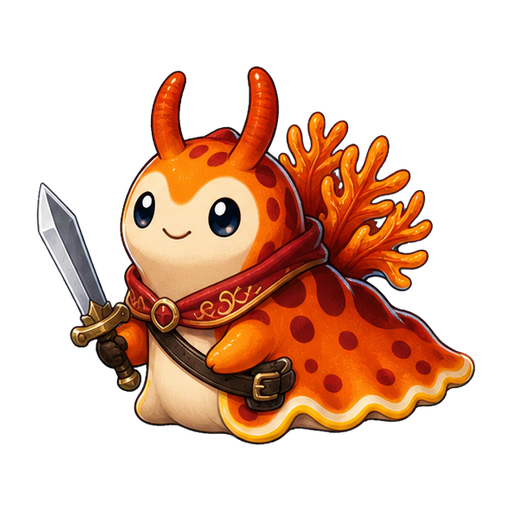
剣士近距離攻撃型 / 炎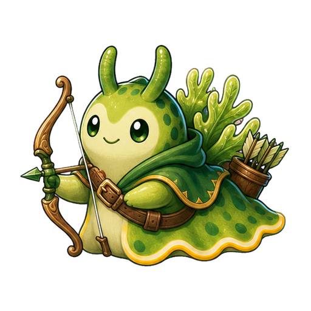
射手遠距離攻撃型 / 森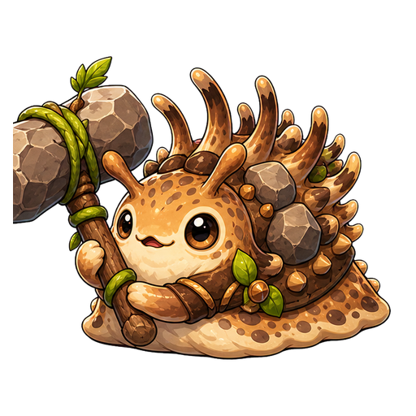
槌士重近距離攻撃型 / 土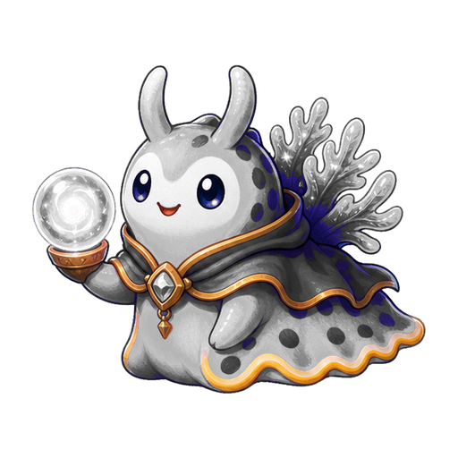
魔導士中距離攻撃型 / 水敵
ベラやフグは弱め、エビやカニはやや強め、イソギンチャクは強敵です。敵の種類と属性を見て、部隊を組み替えます。
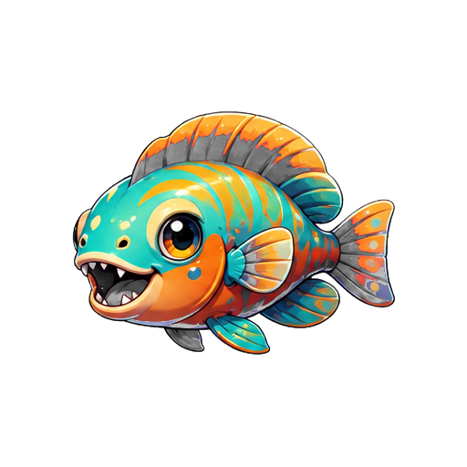
ベラ序盤の魚型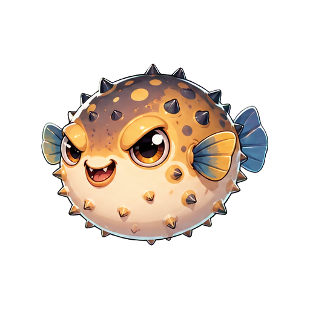
フグ魚型の敵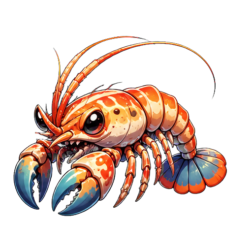
エビ中距離の敵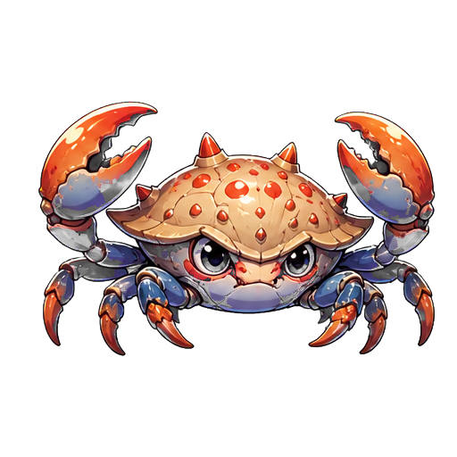
カニ硬めの敵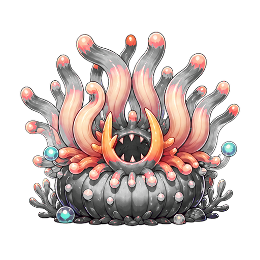
イソギンチャク高火力の強敵攻略の考え方
- 盤面に出せる戦闘参加駒は最大6体です。
- 控え欄を使って、次の進化候補や属性対策用の駒を残します。
- 同じ駒を集めてレベルアップを狙うか、敵に有利な属性を揃えるかが重要な判断です。
- 5ステージ目を突破すると、GAME CLEAR の後にご褒美画像が表示されます。